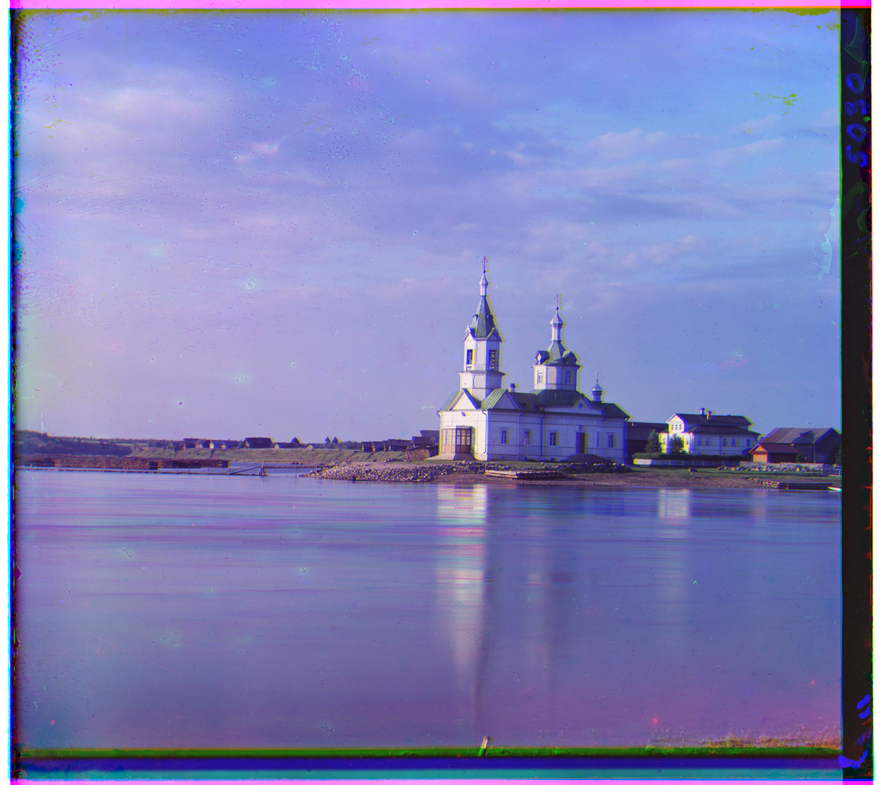

Introduction
GIVE OVERVIEW.
Algorithm
WRITE.
Results (on the provided images)
cathedral.jpg
Green offset: (2, 5)
Red offset: (3, 12)
Green offset: (2, 5)
Red offset: (3, 12)

church.tif
Green offset: (4, 25)
Red offset: (-4, 58)
Green offset: (4, 25)
Red offset: (-4, 58)
emir.tif
Green offset: (23, 49)
Red offset: (40, 107)
Green offset: (23, 49)
Red offset: (40, 107)

harvester.tif
Green offset: (17, 60)
Red offset: (14, 124)
Green offset: (17, 60)
Red offset: (14, 124)
Bells & Whistles
WRITE.